Snow reports
Daily snow reports for skiers: where the snow is, what is coming and where to ski, from the SnowScope snow map and measuring stations. Every number comes from that day's data.
English · Français · Deutsch · Italiano · Español · الدارجة · Svenska · Norsk · Suomi · Nederlands · Slovenščina · Català · Português · Polski · Čeština · Slovenčina · Magyar · Română · Українська · Български · Srpski · Bosanski · Hrvatski · Crnogorski · Македонски · Shqip · Ελληνικά · 日本語
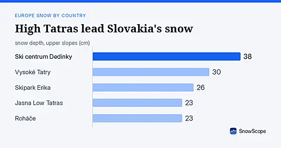
Fresh snow fell unevenly across Slovakia in the past three days. The High Tatras and Low Tatras each gained 24 cm, while lower slopes saw little. Data from 19 November.

Hakuba Happo-one gets about 1.7 m of new snow at the top lift from 19 to 25 November, but rain at the base until 20 November. Day-by-day forecast at three heights.

The UK or Norway? Where the snow is better on 19 November. Snow cover, new snow, resorts and the days ahead in the UK on 19 November.

142 of 155 resorts in Norway have snow on top: the list. Snow cover, new snow, resorts and the days ahead in Norway on 19 November.

Six days of skiing from 191 EUR: we ranked ten cheap ski weeks in Europe by price, then checked 46 past winters to see where the snow is reliable.

Spain has snow on 0.3% of its high mountains today, far behind France's 13%. The Spanish Pyrenees got 26 cm in 72 hours. Data from 19 November.

Finland: Salla at 132 % of a normal 19 November. Snow cover, new snow, resorts and the days ahead in Finland on 19 November.

One week, 670 km² more white ground in Slovenia. Snow cover, new snow, resorts and the days ahead in Slovenia on 19 November.
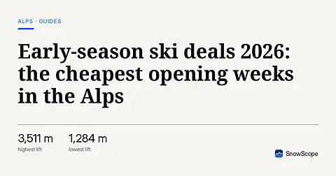
From 20 EUR on an opening weekend to 6-day passes before Christmas: a calendar of the cheapest early-season ski deals in the Alps for 2026, with the snow you can expect.

Austria's snow cover jumped to 48 percent this week. A significant storm arrives 23 November, with up to 55 cm forecast over the next week.
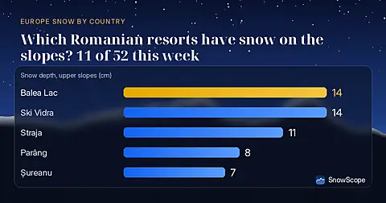
11 Romanian ski resorts have snow cover on 19 November, with the best depths above 2000 m. Fresh snow forecast up to 14 cm by 23 November.

The Pyrenees will see 91 cm of new snow in the next 14 days, with half falling in week 1. Upper slopes above 2500 m get the most. Forecast from 2026-11-18.
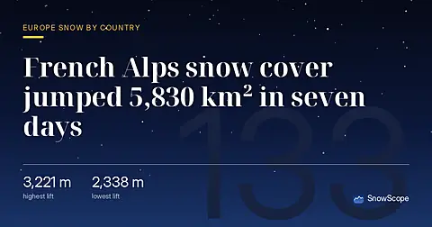
France's snow-covered area grew from 6,040 km² to 11,870 km² in a week. The Mont Blanc massif received 240 cm in 72 hours by November 19.

New snow forecast for 15 Japanese ski resorts from 20 to 25 November: Hakuba and Tsugaike lead with about 90 to 97 cm at the top, Niseko about 35 cm.

Snow in Sauerland and the German uplands on 19 November: snow depth on the upper slopes, fresh snow, the next three days and the pick for a short trip.

Fresh snow hit Italy's high ranges hard. The Aosta Valley received 215 cm in 72 hours; the Piedmont Alps got 76 cm. Data from 19 November.

Germany's one standout: Zugspitze with 14 cm. Snow cover, new snow, resorts and the days ahead in Germany on 19 November.

Snow at the UK's favourite Alpine resorts on 19 November: snow depth on the upper slopes, fresh snow, the next three days and the pick for a short trip.

Swiss snow depths on 19 November are well above normal. Glacier 3000 holds 60 cm, more than twice the typical depth for this date. Next week brings up to 125 cm more.

Snow-covered area jumped from 560 to 1,710 km² between November 17 and 19. Piau-Engaly holds the deepest snow at 15 cm on upper slopes as of November 19.

Only 3 of 318 snow stations in Japan had snow on the ground this morning. Here is where it is, what melted this week, and where the next snow falls.

How much snow will the mountains gain? Our table shows the resorts with the most new snow forecast for the next 24 hours and until 22 November, in …

Only 16 US Northeast resorts have skiable snow on 18 Nov. Thin cover and rain-crust risk mean careful gear choices. Forecasts for 19-21 Nov show no new snow.

Only 16 US Northeast resorts have snow on 18 November. Tuckerman Ravine leads with 38 cm (15 in) on upper slopes. Early-season cover is fragile; stick to groomed runs.

US West snow report, 18 November. Forecast to 21 November: 33 in (83 cm) at China Peak, 30 in (77 cm) at Mammoth Mountain and 28 in (70 cm) at June …

Mount Washington Alpine Resort snow report: 104 cm up top (Western Canada, 18 November). At 1,456 m on Whistler Blackcomb the season is late: our …

Where should you go skiing in the US West? If we were going this weekend, we would choose Palisades Tahoe Alpine Meadows, Kingvale and Boreal, based …

Freezing level reaches 1,500 m at Banff Sunshine Village on November 19. Fresh snow fell across Western Canada in the last 72 hours, but rain threatens the new powder.

Crested Butte snow report: 38 in up top (US West, 18 November). This is a good start at Telluride. At 10,620 ft (3,237 m), our model has 22 in …

Western Canada forecast: 90 cm new snow at Mount Washington in the next two weeks, with 70 cm expected in late November and early December. Model run 2026-11-18.

Fresh snow across the US West has built depths well above normal. At Palisades Tahoe Alpine Meadows, upper slopes hold 75 cm (measured 2026-11-18), compared to 10 cm typical for mid-November.

German mountains face significant snow arrival over seven days, with up to 29 cm possible. Data from 18 November.

Romania's mountains will see up to 25 cm of new snow in the next 7 days, with 12 cm expected on 23 November. Snow depth and forecast as of 18 November.
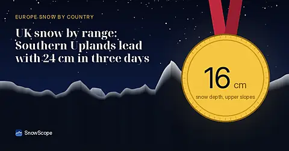
Fresh snow fell unevenly across the UK hills in the past 72 hours. The Southern Uplands received the most, while cover above 1000 m is now complete. Data from 18 November.

A sudden thaw on 18 November removed most of Ukraine's snow cover in 24 hours. Only 430 km² remained, down from 2,350 km² yesterday. New snow is forecast.

Mild weather erased nearly 490 km² of snow cover across Slovakia on 18 November. The High Tatras still hold 17 cm of new snow from the past 72 hours.

27 of Finland's 67 resorts have snow on 18 November. Upper slopes above 1000 m hold 41 cm on average across the country.

Zermatt has 47 cm on upper slopes today, 690% above the November median. The 0°C level stays above 2200 m through Friday.

Sweden or Finland? Where the snow is better on 18 November. Snow cover, new snow, resorts and the days ahead in Sweden on 18 November.

Over the next days the 0 °C level in the Pyrenees should move between 1,900 m and 3,670 m, according to our forecast. At the warmest time of day the …

Austria's glacier resorts lead the country after 14 cm fell in the last 72 hours. Snow cover grew to 18,140 km² as of 18 November.

The Pyrenees will see up to 63 cm of new snow in the next 14 days, with 70% falling in week one. Best snow expected above 2000 m.

Norway vs Finland: 89 % white against 55 %. Snow cover, new snow, resorts and the days ahead in Norway on 18 November.

Snow in Switzerland on 18 November: snow depth on the upper slopes, fresh snow, the next three days and the pick for a short trip.

Fresh snow fell across France's high mountains in the past 72 hours. The Mont Blanc massif received the most: 180 cm. Data from 2026-11-18.

Snow in Austria on 18 November: snow depth on the upper slopes, fresh snow, the next three days and the pick for a short trip.

26 of 114 resorts in Poland have snow on top: the list. Snow cover, new snow, resorts and the days ahead in Poland on 18 November.

Swiss ski areas are running 142% of normal snow cover for November 18. Glacier 3000 tops the ranking with 52 cm, ahead of major storms forecast.
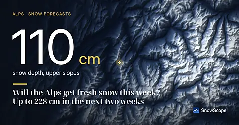
New snow forecast for the Alps through early December. Saint François Longchamp leads with 228 cm expected over 14 days, starting with 35 cm on Thursday.
Italy faces a major snow event: up to 95 cm is forecast for the next 7 days, with 34 cm expected on Friday 20 November. Data from 18 November.

Alps snow report, 18 November. We weighed the snow already on the ground, the new snow of the last 72 hours and what the forecast adds, and picked …

No new snow forecast for Jbel Hebri or Oukaïmeden in the next 14 days. The Atlas mountains remain snowless as November progresses.
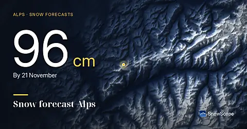
Glacier 3000 snow forecast compared with the region: 96 cm by 21 November. The snow cover shrank from 63,230 km² on 16 November to 60,480 km² today, …

The daily ranking: most new snow forecast for the next 24 hours and until 21 November, in Europe, Morocco and North America, snow line included. …

Snow in Bavaria and the Black Forest on 17 November: snow depth on the upper slopes, fresh snow, the next three days and the pick for a short trip.

Snow in Austria on 17 November: snow depth on the upper slopes, fresh snow, the next three days and the pick for a short trip.

Montenegro snow today, 17 November: snow cover, new snow, snow depth by height, the next days and the best resorts.

Serbia snow today, 17 November: snow cover, new snow, snow depth by height, the next days and the best resorts.

Croatia snow today, 17 November: snow cover, new snow, snow depth by height, the next days and the best resorts.

Bosnia and Herzegovina snow today, 17 November: snow cover, new snow, snow depth by height, the next days and the best resorts.
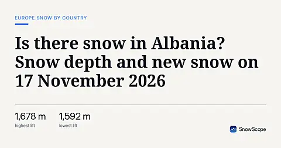
Albania snow today, 17 November: snow cover, new snow, snow depth by height, the next days and the best resorts.

North Macedonia snow today, 17 November: snow cover, new snow, snow depth by height, the next days and the best resorts.

Les Grands Montets saw 74 cm of new snow in the last 72 hours, with more forecast for the coming days, according to our model on November 17, 2026.

Austria is behind: Kühtai has 20 cm, a normal 17 November has 33 cm. Snow cover, new snow, resorts and the days ahead in Austria on 17 November.

Thaw in Bulgaria: 330 km² of snow cover gone in a day. Snow cover, new snow, resorts and the days ahead in Bulgaria on 17 November.

Finland or Sweden? Where the snow is better on 17 November. Snow cover, new snow, resorts and the days ahead in Finland on 17 November.

Snow is coming in France: up to 87 cm in the week ahead. Snow cover, new snow, resorts and the days ahead in France on 17 November.

Snow at the UK's favourite Alpine resorts on 17 November: snow depth on the upper slopes, fresh snow, the next three days and the pick for a short trip.

Rapid snow loss across Italy on 17 November as temperatures rise. Only 12,540 km² remains covered, down from 21,210 km² yesterday. The Aosta Valley saw 134 cm of new snow in 72 hours.

Norway's snow cover is growing fast. Up to 39 cm of new snow is forecast over the next seven days, with the heaviest fall on November 20.

Poland's snow-covered area shrank from 1,300 to 710 km² in a week. Karpacz holds the deepest snow at 36 cm as of 17 November.
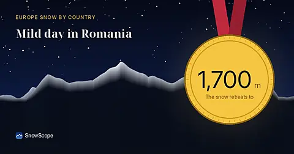
Mild day in Romania: the snow retreats to 1,700 m. Snow cover, new snow, resorts and the days ahead in Romania on 17 November.

Slovakia's snow cover dropped to 1,830 km2 today. Snow sits mostly above 1,200 m; the High Tatras and Low Tatras lead with 8 cm of new snow in 72 hours.

79% of Sweden's ski areas show snow today. Upper slopes at Björkliden and Abisko carry 131 cm. The Hemavan fjells led the past 72 hours with 15 cm of fresh snow.

Fresh snow fell unevenly across Swiss mountains. The Valais Alps received 92 cm in three days; the Bernese Oberland 54 cm. Data from 17 November.

UK gained 8,380 km² of snow cover by 17 November. The North Pennines led with 27 cm in 72 hours.

Ukraine's snow cover dropped to 6% today as the Carpathians melt back. Poland holds twice the white share. Both countries face fresh snow by Friday.

Two-week snow outlook in Andorra: 13 cm and 21 cm. Snow cover, new snow, resorts and the days ahead in Andorra on 17 November.

Only 22 of 170 Czech ski areas show snow cover on 17 November. The Jeseníky and Krkonoše lead with 9 cm and 8 cm in 72 hours. More snow arrives from 20 November.

Slovenia has only 6 % white cover today against Austria's 34 %. Fresh snow in the Julian Alps offers the best chance for early season runs. Data from 17 November.

The snow is shrinking in Germany: 840 km² gone since last week. Snow cover, new snow, resorts and the days ahead in Germany on 17 November.

Kosovo snow today, 17 November: snow cover, new snow, snow depth by height, the next days and the best resorts.

Orelle holds 42 cm, close to the typical 53 cm for mid-November. Fresh snow forecast across the Alps over the next three days.

96 cm of new snow forecast for Les Arcs over the next three days, with today bringing the heaviest falls; model run November 16.

The two-week picture in the US West, 17 November to 30 November, drawn from the two global models that reach two weeks, ECMWF and GFS. Middle of the …

Whistler Blackcomb saw 76 cm of new snow in the last 72 hours, with Mount Cain Alpine Park also receiving 64 cm, as of November 16, 2026.

Albania forecasts 9 cm of snow rising to 22 cm over two weeks, based on our model from November 16.

On 16 November, Andorra has snow cover on just 2 % of its area while France climbs to 11 %; the gap reflects autumn patterns, with deeper falls forecast next week.

215 of 277 Austrian ski resorts have early-season snow on 16 November. The snow line sits at 1500 metres; expect 50 cm in the next week.

Thaw in Bosnia and Herzegovina: 600 km² of snow cover gone in a day

Bulgaria covers just 2% in white with 5 cm at Borovets on its first snow day, while Romania shows 10%, measured 2026-11-16

Mild conditions erased 950 km2 of snow across Croatia on 16 November. Only 880 km2 remains, mostly above 1,500 m. Next snow arrives 21 November.

Thaw has shrunk Czechia's snow cover from 1,250 km² to 720 km² in one day. Measured 16 November. Fresh snow arrives 17 November.

Finland gained 138,530 km² of snow cover in a week, reaching 157,360 km² as the season opened. Data from 16 November 2026.

France or Switzerland? Where the snow is better on 16 November. Snow cover, new snow, resorts and the days ahead in France on 16 November.

German Alps show just 43% of normal snow depth across tracked resorts on 16 November, well behind schedule as the season opens.

Greece snow today, 16 November: snow cover, new snow, snow depth by height, the next days and the best resorts.

Hungary snow today, 16 November: snow cover, new snow, snow depth by height, the next days and the best resorts.

Ireland snow today, 16 November: snow cover, new snow, snow depth by height, the next days and the best resorts.
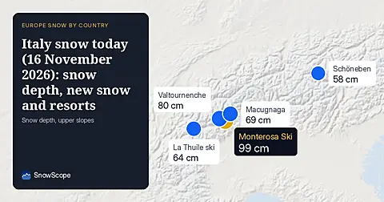
Monterosa Ski holds 99 cm, 38% above normal for mid-November, as Italian Alps gain early snow on 16 November.

Kosovo's two-week snow outlook: 7 cm by November 23 and up to 18 cm from November 24-30, based on satellite data as of November 16.

Our model shows 11 cm in the next week and 22 cm Nov 24-30. Data from 16 Nov.

North Macedonia's mountains will see modest snow this week, then heavier falls next week. Data from 16 November.

Fresh snow from a three-day storm peaked at 76 cm in Jotunheimen and 74 cm in Hardangervidda, Norway's high ranges, on 16 November.

Rapid thaw removed nearly 44% of Poland's snow cover on 16 November. Only 1,170 km² remains white, with recovery expected from 17 November.

Portugal snow today, 16 November: snow cover, new snow, snow depth by height, the next days and the best resorts.

Snow coverage in Romania dropped from 12,900 km² to 6,630 km² in a week, but peaks above 1,500 m keep their white cover as of 16 November.

Despite 60 cm of fresh snow in 72 hours, Scandinavia's mid-November depths are well below average as of 16 November.

Riksgränsen dominates Scandinavia with 173 cm of snow depth measured on 16 November, holding far more mountain water than any rival resort in the region.
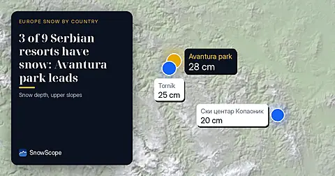
Three of Serbia's nine resorts hold measurable snow on 16 November. Avantura park tops the ranking with 28 cm depth at its station.

Slovakia's snow-covered area rose sharply to 2,020 km² in one week. Ski centrum Dedinky leads with 48 cm. Data from 16 November.

Early November snow covers 1,130 km2 of Slovenia. The ground turns white above 2,000 m elevation; below that, most slopes stay brown. Data from 16 November 2026.

Spain's snow-covered area fell to 310 km² on 16 November. Only 6 of 31 resorts have skiable snow, led by Aramón Cerler at 17 cm.

Sweden's snow cover grew by 167,100 km² in one week. Abisko holds 129 cm as early-season water accumulates in high fells. Data from 16 November.

Snow model forecasts 112 cm in Switzerland by November 24, with 29 cm on November 17. Fresh water accumulates across the high Alps over the coming week.

Warm weather on 16 November removed 1290 km2 of UK snow cover. The snow line is now at 800 metres; fresh snow arrives tomorrow.

Ukraine's snow cover fell from 5,090 km² to 1,650 km² in a week. As of November 16, high terrain above 1,500 m held 89% cover. Up to 25 cm snow forecast in the next 7 days.

Sestriere snow forecast for 23–29 November 2026: 30 cm at the top (15–44 cm), 25 cm at the base, snowiest day Wednesday 25 November, with neighbours compared.

Madonna di Campiglio snow forecast for 23–29 November 2026: 27 cm at the top (8–46 cm), 23 cm at the base, snowiest day Wednesday 25 November, with neighbours compared.
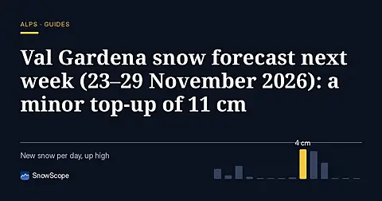
Val Gardena snow forecast for 23–29 November 2026: 11 cm at the top (5–18 cm), 6 cm at the base, snowiest day Wednesday 25 November, with neighbours compared.